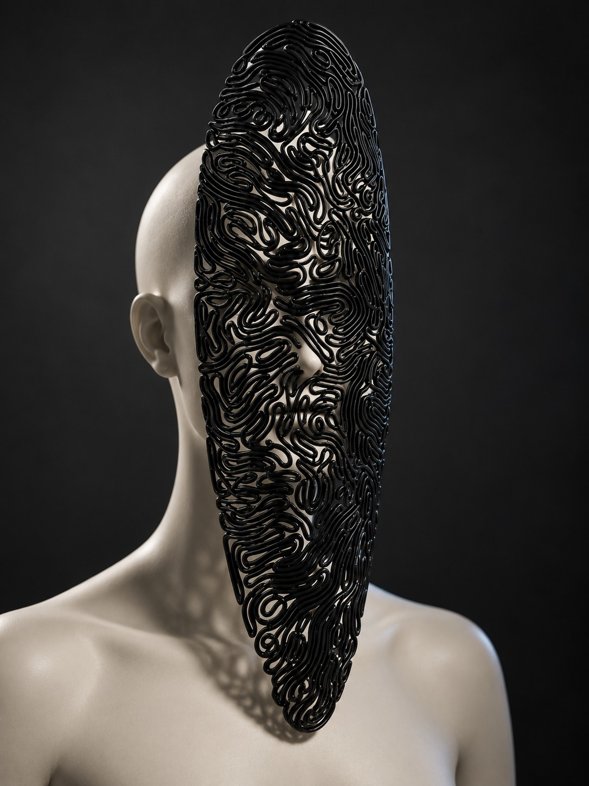
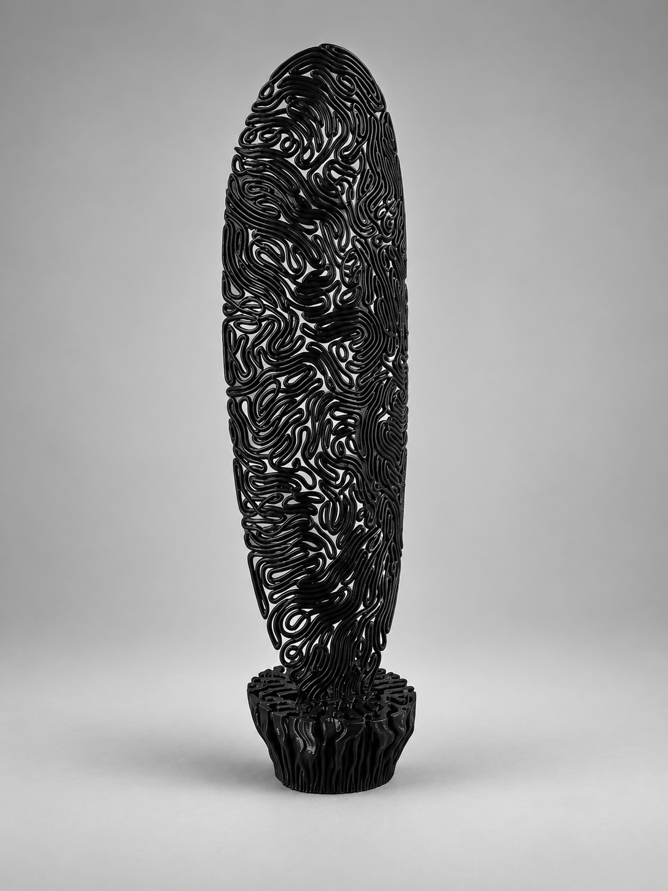
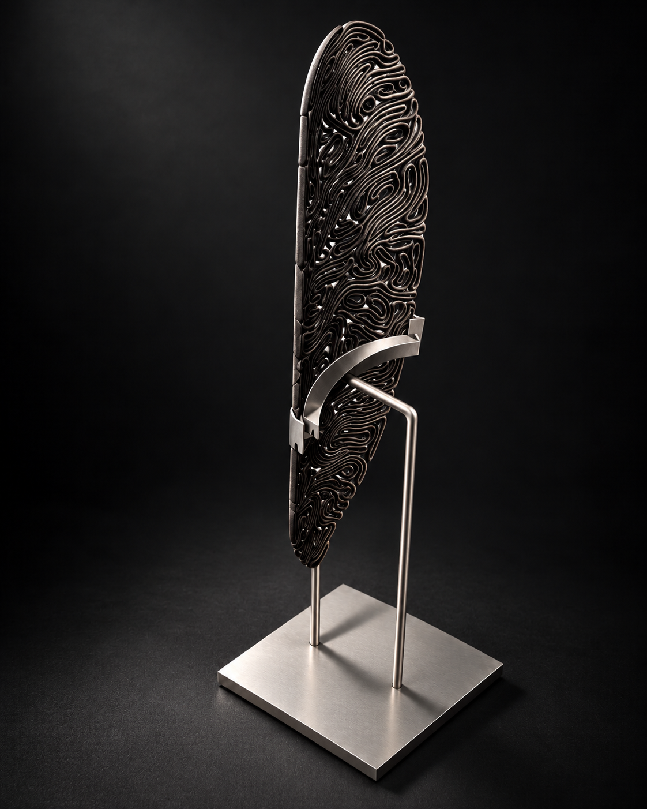
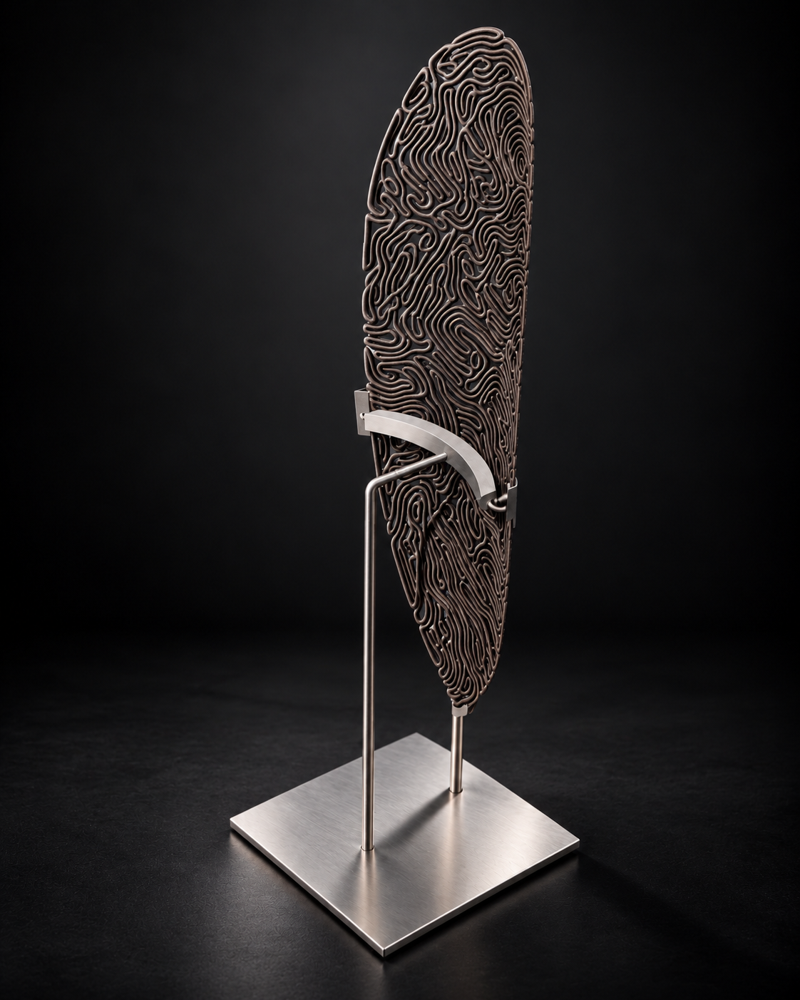
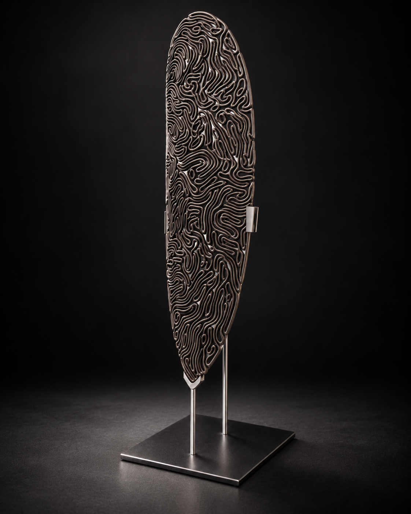
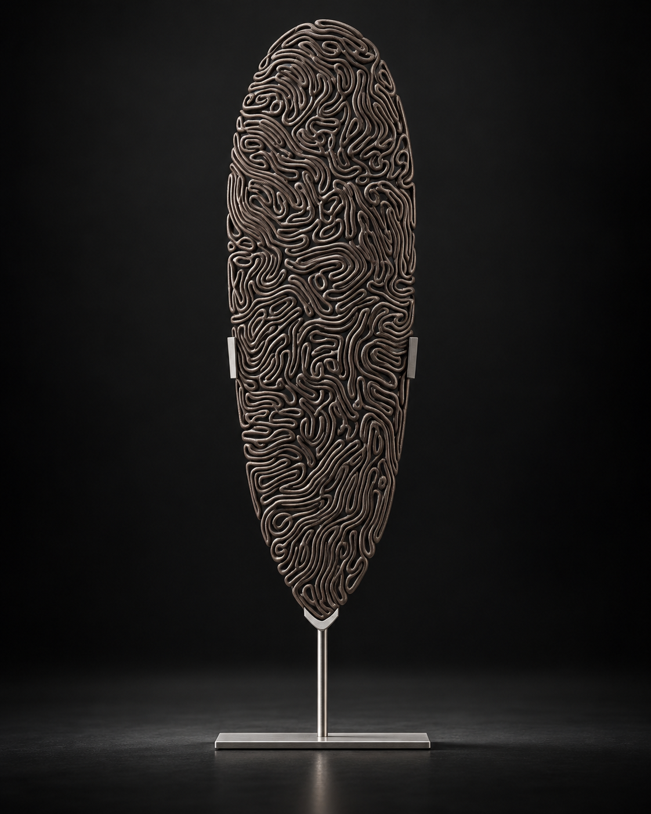

System A · Static
Voronoi Logic
Cell packing that frames the visage — a mapped lattice that becomes the structural rim once extruded.



Parametric Sculpture · Cultural Computation
When an internal conviction manifests in a physical structure
Concept & Inspiration
We wear different faces throughout the day. Some reveal what we feel, while others conceal it.
Visages of Fanaticism began with an interest in how deeply held beliefs can shape a person's identity. Fanaticism, whether religious, ideological, or personal, can be both compelling and unsettling. It is a state of intense devotion, sometimes empowering, sometimes consuming. I wanted to explore what that psychological intensity might look like if it took on a physical form.
The project draws visual inspiration from African mask-making traditions, particularly the striking proportions and pronounced facial features of the Densu Priest mask. I was drawn to the ability of these sculptural forms to communicate presence and meaning beyond ordinary facial expression.
Rather than reproduce a traditional mask, I sought to reinterpret the human face through an exaggerated geometric structure. The intention was to create something simultaneously familiar and unsettling, a form that invites curiosity while suggesting the overwhelming nature of fanaticism.
What happens when conviction becomes visible?


Biological Reference
Brain coral offered an unexpected approach to developing the mask's geometry. Its surface is covered in winding ridges that twist, branch, and fold around one another, forming intricate patterns through gradual growth.
There is order within the complexity.
What interested me was how these seemingly chaotic formations could emerge through relatively simple interactions. Rather than sculpting every ridge individually, I wanted to explore a process in which geometry could develop through a set of computational rules.
Using Rhino and Grasshopper, I investigated differential growth algorithms to generate dense, interconnected curves across a defined surface. The Thallus and Kangaroo systems helped simulate this growth, while Voronoi geometry introduced a contrasting cellular framework. Together, these methods allowed the mask's surface to develop through a combination of organic curvature and geometric structure.
The intention was never to replicate brain coral exactly. Its growth patterns provided a way to translate the project's psychological concept into geometry, allowing the mask to take on an intricate, almost consuming presence.


Render Illustrations
Form Generation
Six stages from bounding face to the dual-system solid.

Grasshopper Flowchart
Static Voronoi mapping and dynamic Thallus/Kangaroo physics run as parallel contributors to the final geometry.
System A · Static
Cell packing that frames the visage — a mapped lattice that becomes the structural rim once extruded.
System B · Dynamic
Physics-driven differential growth that fills the inner face with coral-like ridges and competing channels.

Design Variations


Design Orthogonal Views
Isolated mask


Mask with head


Fabrication Process


Process video


Exhibition Ready Photos




Conclusion
Visages of Fanaticism began as an attempt to give an intangible psychological state a physical presence. What emerged was an exploration of how computational design could translate intensity, complexity, and obsession into sculptural form.
The process revealed an interesting tension between control and unpredictability. Through differential growth and Voronoi geometry, I established rules that guided the formation of the mask, yet the resulting patterns developed a complexity that was difficult to anticipate. Each iteration offered a different interpretation of the same underlying system. The geometry was calculated, but its appearance felt almost instinctive.
Beyond the final form, the project challenged me to think about algorithms as more than tools for producing geometry. They could also become a means of expressing ideas that are difficult to communicate through conventional design.
At its core, the project returns to a question of identity. Our beliefs shape how we understand ourselves, but when does devotion begin to define us entirely? The mask becomes a metaphor for this transformation, its growing structure suggesting how an idea can gradually extend beyond personal conviction and become inseparable from the person who holds it.
I hope to explore this relationship further through physical fabrication and wearable forms, where the mask becomes more than an object to observe. What happens when something we create to express who we are begins to determine who we become?